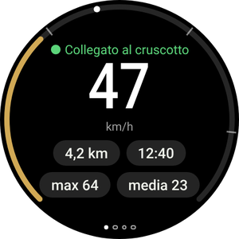
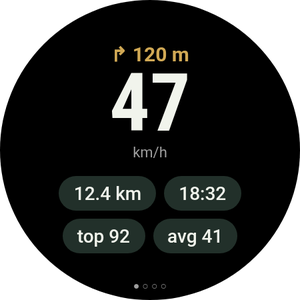
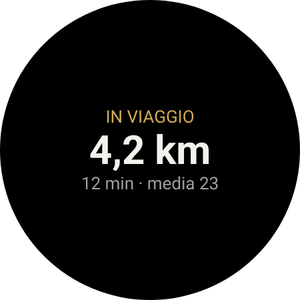
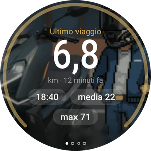

La tua moto al polso
L’app Wear OS è facoltativa e funziona insieme all’app per telefono. Mostra la velocità e la prossima manovra, vibra prima delle svolte, ti guida fino alla moto parcheggiata e permette di controllare Android Auto sul display senza toccare il telefono.
Non hai ancora installato l’app sul telefono? Inizia dalla guida per il telefono.

Cosa vedrai sullo smartwatch






- Uno smartwatch con Wear OS 3 o successivo: Galaxy Watch 4 e successivi, Pixel Watch e altri. Gli smartwatch Huawei, Amazfit e Garmin non usano Wear OS e non sono compatibili.
- Lo smartwatch deve essere già abbinato al telefono, con RideScreen AA 2.2 o successivo installato sul telefono.
- Telefono e smartwatch collegati alla stessa rete Wi-Fi (per esempio quella di casa). Serve solo per l’installazione.
- Circa 10–15 minuti. L’operazione va eseguita una sola volta: le versioni successive si installano dal telefono.
Installa l’app sullo smartwatch
Gli smartwatch non aprono i file APK come i telefoni. La prima volta serve un’app sul telefono che comunichi con l’orologio tramite Wi-Fi (debug wireless). Sembra complicato, ma bastano pochi tocchi.
-
Scarica l’APK dello smartwatch sul telefono
Tocca il pulsante per scaricare direttamente l’APK dello smartwatch (il file che termina con WearOS-reloj.apk). Lascialo nella cartella Download.
Installa anche una di queste app dal Play Store sul telefono: Wear Installer 2 oppure Bugjaeger.
Scarica l’APK per smartwatch -
Attiva le opzioni sviluppatore sullo smartwatch
Galaxy Watch: Impostazioni → Info sull’orologio → Informazioni software → tocca Versione software 5 volte.
Pixel Watch e altri: Impostazioni → Sistema → Informazioni → tocca Numero build 7 volte.
Apparirà un messaggio che conferma l’attivazione delle opzioni sviluppatore.
-
Collega lo smartwatch al Wi-Fi
Impostazioni → Connessioni → Wi-Fi: imposta su Attivo (non «Automatico») e collegati alla stessa rete del telefono.
Se in seguito lo smartwatch non mostra un indirizzo IP, disattiva per un momento il Bluetooth del telefono: l’orologio usa il Wi-Fi solo quando non riesce a comunicare con il telefono tramite Bluetooth. -
Attiva il debug wireless
Impostazioni → Opzioni sviluppatore → attiva Debug ADB e Debug wireless. Apri Debug wireless → Associa nuovo dispositivo.
Lo smartwatch mostra un codice a 6 cifre e un indirizzo con una porta, per esempio 192.168.1.40:37115.
Prima aumenta il tempo di spegnimento dello schermo: se si spegne durante l’associazione, il codice scade. -
Associa e installa dal telefono
Apri Wear Installer 2 (o Bugjaeger), inserisci l’indirizzo e il codice di associazione, quindi connettiti usando l’indirizzo mostrato nella schermata Debug wireless.
Seleziona il file …-WearOS-reloj.apk dalla cartella Download e installalo. Entro un minuto RideScreen AA apparirà sullo smartwatch.
La porta per l’associazione e quella per la connessione sono diverse. È l’errore più comune. -
Apri l’app e disattiva il debug
Apri RideScreen AA sullo smartwatch e consenti l’accesso alla posizione (per la bussola che indica la moto) e alle notifiche.
Ora puoi disattivare il debug wireless e ADB: non servono per usare o aggiornare l’app.

Controlla Android Auto dallo smartwatch
Il display della Zontes non è touch. Con lo smartwatch controlli Android Auto come con un comando per auto: una rotella per spostarti sullo schermo e pulsanti per selezionare, tornare indietro o parlare con l’Assistente.
Il pad direzionale (scorri fino alla seconda pagina)
- ▲ ▼Tocco breve: fa girare la rotella di Android Auto e sposta la selezione da un elemento all’altro. Pressione prolungata: freccia su o giù.
- ◀ ▶Le frecce sinistra e destra cambiano colonna o scheda.
- OKSeleziona l’elemento evidenziato.
- ↩Indietro.
- ⌂Schermata iniziale di Android Auto.
- 🎤Assistente Google («portami a…», «riproduci musica»).
- 📊Torna ai dati del viaggio.
Con ghiera o corona rotante
Per Galaxy Watch Classic, Pixel Watch e smartwatch con corona rotante.
- Ruota la ghiera o la corona per navigare in Android Auto, come la rotella di un comando per auto. Funziona in qualsiasi pagina dello smartwatch.
- Premi OK OK sul pad direzionale per selezionare.
- Nella pagina Viaggi la ghiera scorre l’elenco invece di controllare Android Auto.
Senza ghiera rotante
Per i Galaxy Watch standard (4, 5, 6, 7…) e gli smartwatch con schermo piatto.
- The ▲ ▼ i pulsanti ▲ ▼ del pad direzionale funzionano come una rotella: un tocco, un passo.
- Tienili premuti quando serve una vera freccia, per esempio per risalire un elenco.
- Sui Galaxy Watch con ghiera touch, attivala nelle impostazioni dell’orologio e fai scorrere il dito sul bordo dello schermo come se fosse una ghiera rotante.
Le pagine dell’app
Scorri a sinistra e a destra. I punti in basso indicano la pagina corrente.

Attiva le vibrazioni
Durante la navigazione con Android Auto, lo smartwatch vibra prima di ogni manovra: 2 vibrazioni brevi per la svolta a sinistra, 3 per quella a destra, una lunga e N brevi per l’uscita N di una rotonda e due lunghe per un’inversione a U.
Attivala nell’app sul telefono: ⚙️ Impostazioni → Funzioni aggiuntive del viaggio → Vibrazioni dell’orologio prima della svolta. La funzione è sperimentale.
Riquadro e complicazione
Aggiungi il riquadro Viaggio (scorri dal quadrante e tocca +) per vedere il viaggio in corso o dove hai parcheggiato. La complicazione RideScreen · km mostra i chilometri del viaggio sul quadrante.
Aggiorna lo smartwatch
-
Dal telefono, senza computer
Dalla versione 2.2, quando esce una nuova versione, sul telefono apri ❓ Aiuto → ⌚ Aggiorna l’app dello smartwatch → Ultima versione.
Il telefono scarica l’app per smartwatch e la trasferisce tramite Bluetooth. Servono un paio di minuti: vedrai l’avanzamento sia sul telefono sia sullo smartwatch. Quando termina, tocca Installa sullo smartwatch.
La prima volta lo smartwatch chiede di consentire a RideScreen AA di installare app: attiva il permesso e torna indietro.
Problemi comuni
Lo smartwatch non mostra un indirizzo IPQuando attivi il debug wireless
- Imposta il Wi-Fi dello smartwatch su Attivo, non «Automatico», e collegalo alla stessa rete del telefono.
- Disattiva per un momento il Bluetooth del telefono per far passare lo smartwatch al Wi-Fi. Riattivalo quando hai finito.
Wear Installer non si connetteDurante l’associazione
- Usa la porta della schermata Associa nuovo dispositivo Associa nuovo dispositivo per l’abbinamento e quella della schermata principale Debug wireless per connetterti. Sono diverse.
- Se il codice è scaduto, tocca di nuovo Associa nuovo dispositivo per generarne un altro.
«Pacchetto non valido»Durante l’installazione
Probabilmente hai scaricato l’APK del telefono. Per lo smartwatch serve quello che termina con WearOS-reloj.apk.
Lo smartwatch mostra «Nessun dato dal telefono»Con l’app installata
- Apri RideScreen AA sul telefono almeno una volta e verifica che lo smartwatch sia collegato al telefono tramite Galaxy Wearable o l’app Pixel Watch.
- Le app per telefono e smartwatch devono provenire dalla stessa pagina di download: non funzionano con la versione del Play Store o con l’OpenCfMoto originale.
«⚠️ Avvia il server AA»Nella pagina del viaggio
Il server dell’unità principale di Android Auto è disattivato sul telefono. In Android Auto: ⋮ → Avvia server unità principale (passaggio 6 della guida per telefono).
«Questo smartwatch non consente alle app di installare aggiornamenti»Durante l’aggiornamento dal telefono
Lo smartwatch non consente a un’app di installarne un’altra. Installa la nuova versione come la prima volta (Parte 1).
Nessuna delle precedentiCome chiedere aiuto
Sul telefono tocca ❓ Aiuto → Condividi log e inviali al gruppo indicando i modelli dello smartwatch e del telefono.
RideScreen AA è un software gratuito e open source basato su OpenCfMoto di Alexandru (zanderp). Non è un’app ufficiale Zontes o Google. Le schermate sono illustrative: i nomi delle impostazioni possono variare in base allo smartwatch. · Guida per telefono